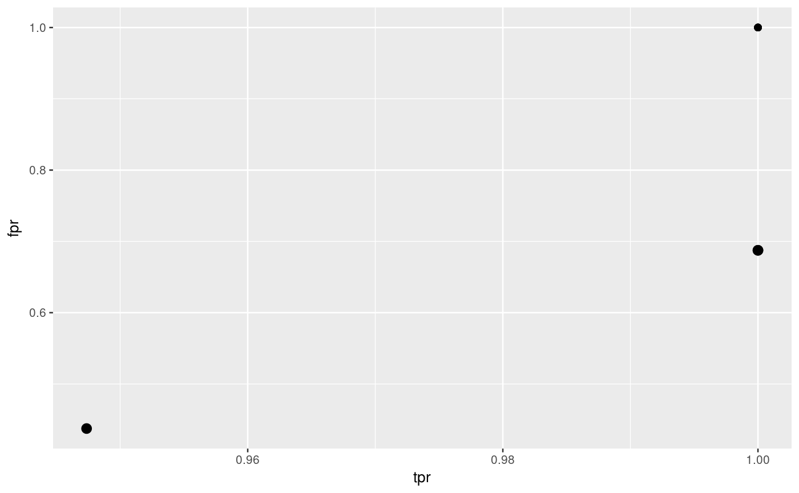

Hyperparameter tuning for multiple measures at once.
Optimizes the hyperparameters of a learner in a multi-criteria fashion. Allows for different optimization methods, such as grid search, evolutionary strategies, etc. You can select such an algorithm (and its settings) by passing a corresponding control object. For a complete list of implemented algorithms look at [TuneMultiCritControl].
tuneParamsMultiCrit(learner, task, resampling, measures, par.set, control, show.info = getMlrOption("show.info"), resample.fun = resample)
Arguments
| learner | (Learner | |
|---|---|
| task | (Task) The task. |
| resampling | ([ResampleInstance] | [ResampleDesc]) Resampling strategy to evaluate points in hyperparameter space. If you pass a description, it is instantiated once at the beginning by default, so all points are evaluated on the same training/test sets. If you want to change that behavior, look at [TuneMultiCritControl]. |
| measures | [list of [Measure]) Performance measures to optimize simultaneously. |
| par.set | ([ParamHelpers::ParamSet]) Collection of parameters and their constraints for optimization. Dependent parameters with a `requires` field must use `quote` and not `expression` to define it. |
| control | ([TuneMultiCritControl]) Control object for search method. Also selects the optimization algorithm for tuning. |
| show.info | ( |
| resample.fun | ([closure`) The function to use for resampling. Defaults to [resample] and should take the same arguments as, and return the same result type as, [resample]. |
Value
([TuneMultiCritResult]).
See also
Other tune_multicrit: TuneMultiCritControl,
plotTuneMultiCritResult
Examples
# multi-criteria optimization of (tpr, fpr) with NGSA-II lrn = makeLearner("classif.ksvm") rdesc = makeResampleDesc("Holdout") ps = makeParamSet( makeNumericParam("C", lower = -12, upper = 12, trafo = function(x) 2^x), makeNumericParam("sigma", lower = -12, upper = 12, trafo = function(x) 2^x) ) ctrl = makeTuneMultiCritControlNSGA2(popsize = 4L, generations = 1L) res = tuneParamsMultiCrit(lrn, sonar.task, rdesc, par.set = ps, measures = list(tpr, fpr), control = ctrl)#>#> #> #>#>#>#>#>#>#>#>#>#>#>#>#>#>#>#>#>#>#>#>